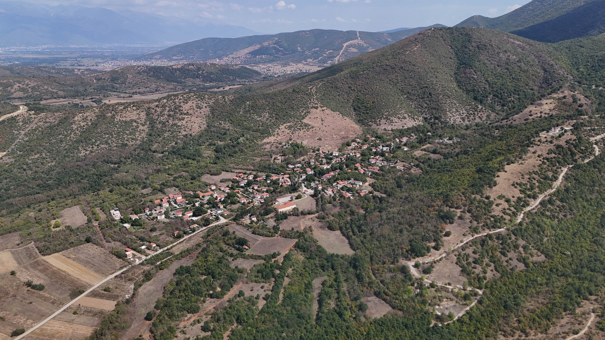

На падините на Сува Гора, крај реката Вардар, помеѓу Тетово и Гостивар — село со 8000 години непрекинат живот, од неолитска населба до денешните дворови.
Стенче е село во Општина Брвеница, сместено во областа Горни Полог, на падините на Сува Гора, недалеку од левиот брег на реката Вардар. Лежи на регионалниот пат Тетово–Гостивар, на речиси половина пат меѓу двата града — 25 километри јужно од Тетово и 14 километри северно од Гостивар.
Историски, селото било дел од Тетовската каза во времето на Отоманската Империја. Денес е едно од десетте населени места во општината, со корени што допираат далеку подлабоко од пишаната историја — до неолитот.
Под селото, на брегот на Вардар, ископувањата на локалитетот Тумба Потсело и Стенчевската тврдина открија непрекинат низ од културни слоеви — од раниот неолит до средниот век. Малку места во Полог чуваат толкава длабочина на време на едно место.
Стотина жители, повеќето постари. Земјоделство и сточарство, куќи наредени по патот кон Гургурница, децата одамна отселени во Тетово и Гостивар.
Селото фигурира во отомански пописи и патописи; на локалитетот се пронајдени и венецијански монети — трага од трговски патишта низ Полог во XIV–XV век.
На тврдината е откриена ранохристијанска базилика со три крстилници — единствена со ваков број во Македонија — и голем железен крст од V век, знак дека Стенче можеби бил седиште на епископија.
На зарамнето плато, опкружено со кули и бедеми градени во малтерна техника — континуитет на живот со градски белези, według археологот Владимир Лилчиќ, без прекин до денес.
Подоцнежните слоеви покажуваат влијание на Винчанската култура — нови форми и украси во керамиката, знак на поширока размена низ Балканот.
Најстариот хоризонт — куќи градени по големина на семејство, керамика сликана со бело и кафеаво, и цел жртвеник од типот на Големата Мајка, поврзан со Анзабегово–вршничката културна група.
Селото низ објективот на неговите мештани и посетители.